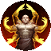

<!doctype html><html lang="tr"><head><meta charset="utf-8"><style>
@font-face{font-family:PB;src:url(assets/fonts/punkboy_bi.otf)}
@font-face{font-family:Mon;font-weight:900;src:url(node_modules/@fontsource/montserrat/files/montserrat-latin-900-normal.woff2) format('woff2')}
html,body{margin:0;background:transparent;overflow:hidden}
#root{position:relative;width:1920px;height:1080px;overflow:hidden;font-family:PB;color:#F4EFE6}
.ab{position:absolute}
:root{--lime:#D4FF3A;--red:#FF3B5C;--paper:#F4EFE6;--ink:#0B0B0F}
/* Turkish letters the font lacks, built from its own pieces */
.ti{position:relative;display:inline-block;line-height:.9}
.ti.dot:after{content:'';position:absolute;left:54%;bottom:1.0em;width:.19em;height:.16em;background:currentColor;border-radius:40% 55% 45% 50%;transform:translateX(-50%) rotate(-12deg)}
.ti.brv:after{content:'';position:absolute;left:54%;bottom:.92em;width:.4em;height:.17em;border:.1em solid currentColor;border-top:0;border-radius:0 0 .3em .3em;transform:translateX(-50%) rotate(-8deg)}
.ti.ced:after{content:'Ç';position:absolute;left:0;right:0;top:0;text-align:center;clip-path:inset(86% -20% -80% -20%);transform:translateX(-.02em)}
.ti.pd{width:.24em;height:.8em}.ti.pd:after{content:'';position:absolute;left:.08em;bottom:.04em;width:.17em;height:.16em;background:currentColor;border-radius:45% 55% 50% 40%;transform:rotate(-10deg)}
.pc{font-family:Mon;font-weight:900;font-size:.78em;margin-right:.04em}

@font-face{font-family:Mon;font-weight:900;src:url(node_modules/@fontsource/montserrat/files/montserrat-latin-ext-900-normal.woff2) format('woff2');unicode-range:U+0100-024F,U+0130-0131,U+015E-015F,U+011E-011F}
@font-face{font-family:Mon;font-weight:900;src:url(node_modules/@fontsource/montserrat/files/montserrat-latin-900-normal.woff2) format('woff2')}
#root{position:relative;width:1080px;height:1920px;overflow:hidden;font-family:PB;color:#F4EFE6}
.ab{position:absolute}
.paper{background:#F4EFE6;color:#0B0B0F;clip-path:polygon(0 3%,4% 0,12% 2%,22% .4%,33% 2.4%,45% .3%,57% 2%,68% .2%,80% 2.2%,91% .4%,100% 1.5%,100% 97%,93% 100%,82% 98%,70% 99.8%,58% 97.8%,46% 100%,34% 98%,22% 99.6%,11% 97.6%,0 99.4%);filter:drop-shadow(0 14px 24px rgba(0,0,0,.5))}
.ic{border:5px solid #0B0B0F;display:block}
.cap{position:absolute;left:110px;right:150px;top:1240px;text-align:center;font-family:Mon;font-weight:900;font-size:64px;line-height:1.12;text-transform:uppercase;text-shadow:0 5px 0 #000,0 0 18px rgba(0,0,0,.9),0 0 4px #000}
.y{color:#FFD84A}
.tag{position:absolute;left:0;right:40px;top:150px;text-align:center}
.stamp{display:inline-block;font-size:58px;padding:0 16px 2px;border:6px solid currentColor;border-radius:10px;background:rgba(244,239,230,.94)}
.pt{display:inline-block;width:30px;height:30px;border-radius:50%;border:4px solid #0B0B0F;margin:0 4px;background:#cfc8bb}
.pt.on{background:#D4FF3A}
</style></head><body><div id="root"><div id="dyn"></div></div>
<script>const tr=s=>String(s).replace(/İ/g,'<span class="ti dot">I</span>').replace(/Ğ/g,'<span class="ti brv">G</span>').replace(/Ş/g,'<span class="ti ced">S</span>').replace(/\./g,'<span class="ti pd">&#8203;</span>').replace(/%/g,'<span class="pc">%</span>');
const S={
hook:`<div class="ab" style="left:120px;right:150px;top:330px;text-align:center;transform:rotate(-3deg)"><div style="display:inline-block;background:#F4EFE6;color:#0B0B0F;padding:14px 34px 6px;font-size:84px;line-height:1.05;box-shadow:12px 14px 0 rgba(0,0,0,.55)">${tr('HÂLÂ Q MI')}<br>${tr('MAKSLIYORSUN?')}</div></div>
 <div class="ab" style="left:0;right:40px;top:640px;text-align:center"><span style="display:inline-block;font-size:140px;color:#FF3B5C;margin:0 26px;vertical-align:40px;text-shadow:0 8px 0 rgba(0,0,0,.6)">✗</span></div>
 <div class="cap">SANA <span class="y">KÖTÜ</span> BİR HABERİM VAR</div>`,
cmp:`<div class="ab paper" style="left:110px;width:820px;top:300px;padding:28px 34px 30px">
  <div style="display:flex;align-items:center;gap:22px"><div><div style="font-size:52px;line-height:1">${tr('Q / HİLAL SALDIRISI')}</div><div style="font-size:38px;margin-top:6px">${tr('PUAN BAŞI: +35 HASAR')}</div><div style="font-size:38px">${tr('BEKLEME: -0.5 SN')}</div></div></div>
  <div style="height:4px;background:#0B0B0F;margin:22px 0;opacity:.2"></div>
  <div style="display:flex;align-items:center;gap:22px"><div><div style="font-size:52px;line-height:1">${tr('W / SOLGUN KAMER')}</div><div style="font-size:38px;margin-top:6px"><span style="background:#D4FF3A;padding:0 8px">${tr('PUAN BAŞI: +36 HASAR')}</span></div><div style="font-size:38px"><span style="background:#D4FF3A;padding:0 8px">+30 KALKAN</span> <span style="background:#D4FF3A;padding:0 8px">${tr('BEKLEME: -1.5 SN')}</span></div></div></div>
  <div class="stamp" style="position:absolute;right:-30px;top:200px;color:#7FB800;transform:rotate(12deg)">W MAKS</div></div>
 <div class="cap"><span class="y">W</span> ARTIK Q'YU GEÇTİ</div>`,
order:`<div class="ab paper" style="left:110px;width:820px;top:340px;padding:28px 34px 34px;text-align:center">
  <div style="font-size:56px;margin-bottom:18px">${tr('SKİLL SIRASI')}</div>
  ${[['spell_DianaOrbs','W',5,1],['spell_DianaQ','Q',3,0],['spell_DianaTeleport','E',1,0]].map(([i,k,n,on])=>`<div style="display:flex;align-items:center;gap:16px;margin:12px 0 0 40px"><span style="font-size:52px;width:50px">${k}</span>${[0,1,2,3,4].map(j=>`<span class="pt ${j<n?'on':''}"></span>`).join('')}</div>`).join('')}
  <div style="font-size:40px;margin-top:20px">${tr('Q: 3 PUAN / W: 9. SEVİYEDE MAKS')}</div></div>
 <div class="cap">W YİNE <span class="y">9. SEVİYEDE</span> BİTİYOR</div>`,
runes:`<div class="ab paper" style="left:110px;width:820px;top:300px;padding:30px 34px 34px">
  <div style="display:flex;align-items:center;gap:20px"><span style="font-size:58px">YENİLMEZ</span></div>
  <div style="display:flex;align-items:center;gap:20px;margin-top:14px;opacity:.55"><span style="font-size:46px;text-decoration:line-through;text-decoration-color:#FF3B5C;text-decoration-thickness:6px">${tr('EFSANE: ÇEVİKLİK')}</span></div>
  <div style="display:flex;align-items:center;gap:20px;margin-top:10px"><span style="font-size:52px;background:#D4FF3A;padding:0 10px">${tr('EFSANE: HIZ')}</span></div>
  <div style="display:flex;align-items:center;gap:20px;margin-top:14px"><span style="font-size:52px;background:#D4FF3A;padding:0 10px">${tr('ÜÇLÜ TONİK')}</span></div></div>
 <div class="cap">SALDIRI HIZI DEĞİL <span class="y">YETENEK HIZI</span></div>`,
item:`<div class="ab" style="left:0;right:40px;top:420px;text-align:center"><div class="paper" style="display:inline-block;padding:30px 50px 30px;transform:rotate(-3deg)"><div style="font-size:66px;margin-top:16px">${tr('GÜNDÜZ VE GECE')}</div></div></div>
 <div class="cap">W'YU ÜST ÜSTE <span class="y">BASIP EZ</span></div>`,
end:`<div class="ab" style="inset:0;background:rgba(11,11,15,.55)"></div><div class="ab" style="left:0;right:40px;top:640px;text-align:center;transform:rotate(-3deg)"><div style="font-size:64px;letter-spacing:.1em">${tr('TAKİP ET')}</div><div style="display:inline-block;margin-top:18px;font-size:120px;line-height:1.1;padding:10px 40px 0;background:#D4FF3A;color:#0B0B0F;box-shadow:14px 16px 0 rgba(0,0,0,.6)">FEEDLEME<br>HOCAM</div></div>`};
window.show=k=>{document.getElementById('dyn').innerHTML=`<div class="tag"><span style="font-size:34px;letter-spacing:.06em;padding:4px 18px 2px;background:rgba(11,11,15,.75);border-radius:8px">FEEDLEME HOCAM</span></div>`+S[k]};
</script></body></html>